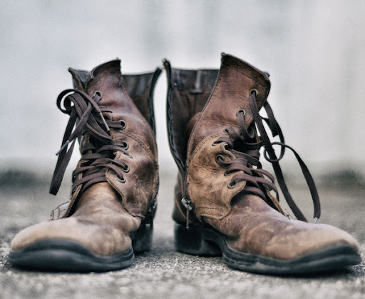

Boiled Old Leather Boot

Description
A favourite meal of prison convicts, castaways
and military nutjobs alike. While some may view
boiled boot as a last resort, with the right
knowhow you can turn this into a dish you can serve
the whole family.
Ingredients
- 1 Pair Leather boots, well worn (brown leather if possible)
- 9 Litres of Water
- 1 Pair Fresh Laces (chilled)
- salt
- 1 Kg Butter
Steps
- Take your boots and rinse under cold running water to remove
any loose soil that may still be on them
- Remove the old laces from the boots and throw away
- Add the boots and laces to a large pot of salted boiling water
- Reduce to a simmer, add a lid to the pot and leave to
boil for four weeks (Or until tough)
- Drain the water away and plate.
- Twist the laces over the boots for dramatic effect.
- Cut the butter in half and place half within each boot
- Serve